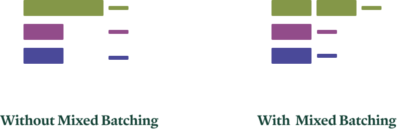
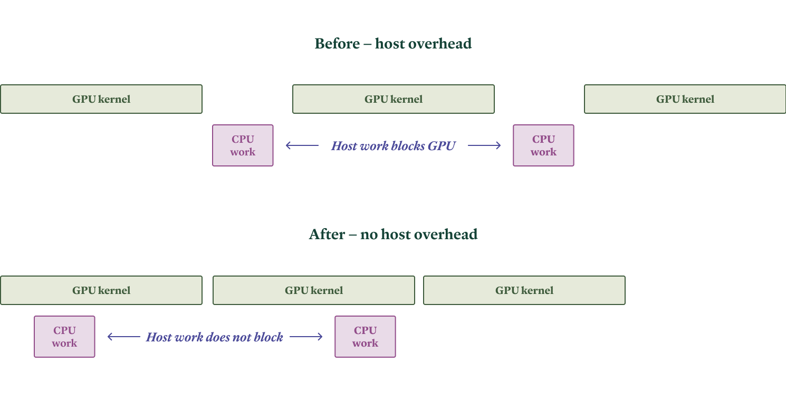
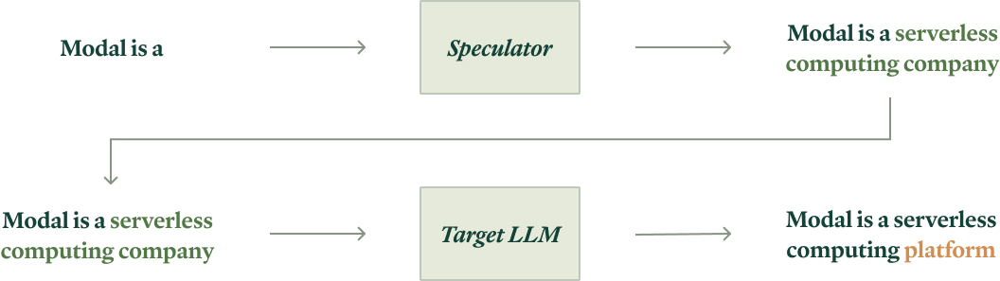
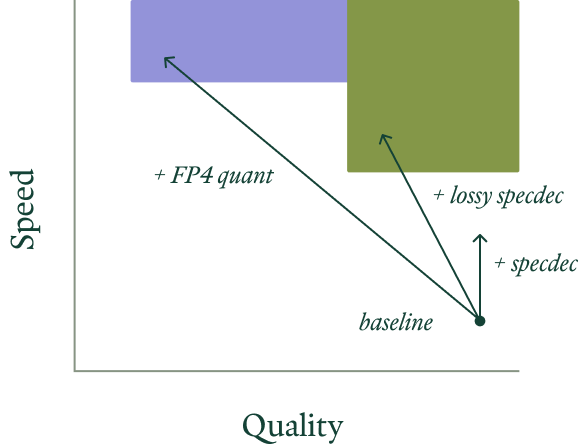
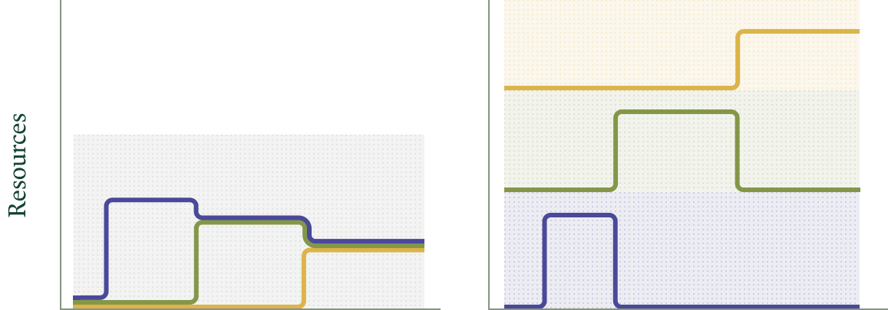
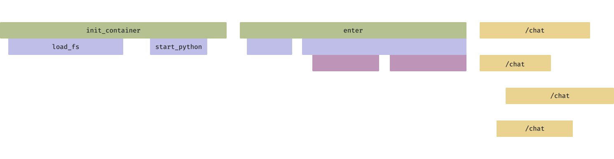
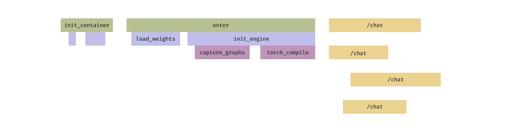
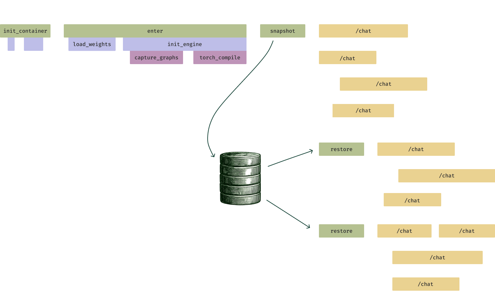

The three types of LLM workloads and how to serve them
We hold this truth to be self-evident: not all workloads are created equal.
But for large language models, this truth is far from universally acknowledged. Most organizations building LLM applications get their AI from an API, and these APIs hide the varied costs and engineering trade-offs of distinct workloads behind deceptively flat per-token pricing.
The truth, however, will out. The era of model API dominance is ending, thanks to excellent work on open source models by DeepSeek and Alibaba Qwen (eroding the benefits of proprietary model APIs like OpenAI's) and excellent work on open source inference engines like vLLM and SGLang (eroding the benefits of open model APIs powered by proprietary inference engines).
Engineers who wish to take advantage of this technological change must understand their workloads in greater detail in order to properly architect and optimize their systems.
In this document, we'll walk through the workloads and requirements we've seen in the market, working with leading organizations deploying inference to production at scale. We'll explain the challenges LLM engineers face when building for these workloads and how they solve those challenges. And we'll share a bit about how you can implement those solutions on our cloud platform.
The breakdown: offline, online, and semi-online
Gallia est omnis divisa in partes tres.
In the more mature world of databases, there is a well-known split between transaction processing (OLTP, think "shopping carts") and analytical processing (OLAP, think "Year Wrapped"). In between are hybrid workloads (HTAP) with the characteristics of both.
A similar three-part division has helped us organize LLM workloads:
- offline or analytical workloads, which operate in batch mode, write to data stores asynchronously, and demand throughput above all else,
- online or interactive workloads, which operate in streaming mode, communicate synchronously with humans, and demand low latency, and
- semi-online or bursty workloads, which operate on streams of batches, communicate with other live computer systems, and demand flexible infrastructure.
Our recommendations for each are as follows:
- for offline workloads, we recommend using vLLM via asynchronous RPC to ad hoc, auto-scaled compute capacity
- for online workloads, we recommend using SGLang with excess tensor parallelism and EAGLE-3 speculative decoding on live edge Hopper/Blackwell GPUs accessed via low-overhead, prefix-aware HTTP proxies
- for semi-online workloads, we recommend using either engine with rapid autoscaling of ad hoc compute capacity that can handle variable load per-replica
We will unpack and justify these recommendations, with reference to both specific applications & workloads that run on our platform and sample code that you can work off of, in the remainder of this document.
Offline workloads demand throughput
The law of increasing return may be worded thus: An increase of labour and capital leads generally to improved organization, which increases the efficiency of the work of labour and capital.
The Weaviate Transformation Agent augments and updates entire datasets by applying an LLM to each row.
A leading video transcription service needs to produce LLM summaries of a large volume of recorded calls for later search and retrieval.
These systems are offline: they produce information for long-term storage in another computer system (like a filesystem or a database). Workloads are submitted as bulk "jobs" composed of many LLM requests. The entire job should be completed quickly, for cost reasons, but no single request requires immediate service. The scale of the job exposes substantial parallelism, which allows for economies of scale.
Offline systems are generally easier to architect — computer systems began as offline batch-processing machines for a reason! But they still have their challenges.
Challenge: Maximizing throughput per dollar
The core challenge of offline, batch workloads is to maximize the throughput while controlling cost by taking advantage of intra-batch task parallelism.
Fundamentally, this is good news. The most popular and readily-available hardware for running LLM inference, GPUs, are designed for maximum throughput, from their per-clock-cycle context switching and large matrix multiplication units to their task-parallel programming model. That makes it relatively easy to write inference kernels that saturate compute resources, and the open source and freely available kernels are satisfactory. Additionally, training of LLMs and other neural networks is an offline, batch workload, and training workloads have historically gotten the most and the quickest attention, e.g. when new hardware enters the market.
But kernels are not the only code required to take advantage of parallelism in offline workloads. As one prominent example, batches must be constructed out of live and pending tasks (aka requests). Intra-task LLM inference work can be split into two phases: prefill (aka prompt processing) and decode (aka generation). Prefill work can be further split into chunks. With care, all of these kinds of work can be scheduled together for different tasks in the same batch.

With mixed batching, less-compute-intensive decode work (thinner lines) can piggyback on more compute-intensive prefill work (thicker lines). Colors indicate different tasks. For details, see the SARATHI paper.The vLLM inference engine has better support for these scheduling optimizations. For this reason, we currently recommend it for throughput-sensitive, offline workloads.
Implementation
We make the following choices to optimize for throughput (per dollar) in offline applications:
- Run on vLLM with async scheduling and chunked prefill.
- Send large batches in each request to expose maximum parallelism to the
engine. This is easiest with an offline interface, like the
LLMabstraction in vLLM's Python SDK, rather than the online-serving-oriented HTTP server interfaces. - On Modal, use asynchronous RPC with
.spawnor.spawn_mapto queue up large numbers of requests for later retrieval or storage. - Limit the number of GPUs per replica to the minimum required to run on a large enough batch to saturate the GPU's compute resources. Excess available GPU capacity should be instead shifted to running more replicas.
You can find these patterns demonstrated and explained in detail in this code sample.
Future considerations
As the reliability of models increases and as their use becomes more commonplace, we expect more and more batch workloads to operate quietly in the background of many businesses, just as data analytics jobs, which started out as rare, heroic tabulations like censuses, are now humdrum table stakes.
We've noticed an interesting pattern in GPU pricing, which shows up in our own current rates at time of writing: the FLOPs per dollar is roughly constant, so older GPUs that might be easier to come by (in on-premises deployments) or available in larger quantities (on platforms like Modal) serve quite nicely for jobs that care about throughput per dollar more than they care about throughput per second.
Online workloads abhor latency
When a computer and its users interact at a pace that ensures that neither has to wait on the other, productivity soars, the cost of the work done on the computer tumbles, employees get more satisfaction from their work, and its quality tends to improve. Few online computer systems are this well balanced…
Agents built with Decagon Voice need to participate in phone calls with humans requesting support help.
A leading AI IDE company needs to serve "smart" auto-completion in the brief intervals while human engineers consider what code to write next.
These systems are online: a human user is interacting with the system, and they want responses that match their (and other humans') reaction time, on the order of at most a few hundred milliseconds. Human users create multi-turn contexts from their repeated interactions.
Online systems are extremely challenging to build. They are extremely performance-sensitive, and performance melts abstractions and couples decoupled concerns. But they can be built, if you can solve the attendant challenges.
Challenge: Avoiding host overhead
The primary challenge of online workloads is that the system has only a few hundred milliseconds to respond.
First, that means that the performance hits from using interpreted languages, like Python, start to matter. Leading LLM inference engines are written mostly in Python, for faster development, and so they need to be architected and implemented carefully to avoid the work on the CPU (or host) from blocking the work on the GPU — inflicting "host overhead". We wrote about the kinds of host overhead inference workloads encounter, and how we've contributed to inference engines to solve them, in this blog post.

In our experience, the SGLang inference engine wins here, since it generally exhibits lower host overhead.
Challenge: Reducing communications overhead
To repeat: the primary challenge of online workloads is that the system has only a few hundred milliseconds to respond.
We are here considering LLM inference services, rather than local applications, and so communication between the client and the system can introduce notable latency at this timescale. Specifically, networks operate at a large fraction of the speed of light, but that means tens or even hundreds of milliseconds of latency for clients (assumed Earthbound) to a system implemented in a single geographic location.
The solution is to deploy both routing proxies and accelerator capacity to "the edge", i.e. into datacenters that are close to clients. Quite apart from narrow-sense technical issues, this can prove challenging due to market conditions, as not all cloud providers have available capacity of all GPU types in all regions. At Modal, we solve this by aggregating capacity across clouds, which support regionalized service deployments.
Challenge: Handling multiple turns
Online workloads are interactive not just in latency requirement but also in request patterns. Human users respond to the system's response, which the system must respond to in turn.
Unlike a (nominally) stateless protocol like HTTP, efficient multi-turn LLM inference is stateful. It may not look that way, since clients generally provide the entire conversation history in their requests. But contemporary models based on the Transformer architecture have computation requirements that scale quadratically with conversation length. This can be exchanged for linear computation in exchange for storing a linear quantity of model activations, the "key-value cache" (originally and more descriptively known as the "past cache").
The solution is to route requests to LLM inference replicas based on the information used to populate the cache. For lossless cacheing, that means the prefix(es) of the request. This "prefix-aware" routing can look as simple as sticky sessions per conversation, which we provide native support for in Modal, or can involve deeper inspection of both request and cache contents.
Challenge: Wrangling the memory bound
The bottlenecking operations in LLM inference with KV caching have a low arithmetic intensity, which means inference is bound by memory.
Intuitively, you can generate only one or a few tokens per forward pass per request, but you must load all the model weights (typically numbered in the billions) into registers. Per user, those weights get used for roughly one add and one multiply, but ridge point arithmetic intensities for GPUs are in the hundreds or thousands of operations per byte — and so, much arithmetic bandwidth will go to waste. Furthermore, even if the latency requirements and request load for the online service admit batching across requests, prefixes are generally mostly distinct per request for these workloads, and so distinct elements of the KV cache must be loaded per request. Cache contents start out negligible relative to model weights but grow with sequence length.
The foregoing arguments focus on throughput, but in online workloads, where latency is the primary concern, the situation is even worse. Because running a forward pass on a batch requires loading billions of model weights and memory bandwidths are measured in trillions of bytes per second, forward passes on single accelerators necessarily take milliseconds. Individual users cannot see lower per-token latencies than this. Autoregressive, i.e. sequential, generation stacks these latencies, rapidly eating into the latency budget, even for short generated sequences (another instance of Amdahl's heartbreaking law).
One resolution is to increase the memory bandwidth in the system (specifically, the memory bandwidth between model weights + KV cache and arithmetic units). On the hardware side, that means using the latest GPUs, like H100s and B200s, which offer substantial improvements in memory bandwidth over past generations.
Using multiple GPUs increases aggregate bandwidth. But just adding more GPUs isn't enough to cut latency. On the software side, systems must additionally take advantage of intra-task parallelism to split bandwidth demands across accelerators. The most common approach is tensor parallelism, which takes advantage of the inherent parallelism of matrix multiplications to split pieces of the multiplication onto different workers.
Tensor parallelism splits a single matrix multiplication (left-hand-side of equation) across GPUs (represented by color; shared data on all GPUs in gray).This requires low latency and high bandwidth, so it is usually done only within the backend/"scale-up" network, typically NVLink for GPUs. For many useful open source models applied to specific tasks, the standard eight-accelerator NVLink domain provides sufficient memory bandwidth to hit interactive latency targets, but we anticipate a future where the larger, rack-scale NVLink domains offered by NVSwitch are required.
In addition to increasing memory bandwidth, systems can also decrease memory requirements, typically at a cost to model quality. Whether this trade-off is sensible is application-dependent — another good reason to host your own inference!
The first lever to pull is floating point quantization. Generally, the performance benefit is greater if the hardware supports native floating point operations on the quantized data type: eight bit (FP8) for Hopper GPUs, four bit (FP4) for Blackwell GPUs. You can see what these formats do to data on the Block Quants visualizer.
For models above about seventy billion parameters, four bit quantization works well with minimal fuss. For smaller models, down to a billion parameters, only eight bit quantization retains sufficient model quality — with the notable exception of gpt-oss 20B.
Finally, we note in passing that the reason for the mixture-of-experts (MoE) structure for feedforward layers in contemporary architectures is to reduce the demand on memory bandwidth. If you're comparing across models to determine memory requirements and serving cost, look at active parameters, not just total parameters!
Challenge: Cheating the speed of light
Eventually, the memory bound is inescapable, and latency cannot be reduced any further. The system has reached the metaphorical "speed of light" for the hardware.
The speed of light cannot be broken, but it can be cheated.
The key technique for memory-bound inference is speculative decoding, which takes advantage of some of the slack in arithmetic bandwidth in naïve, single-token autoregressive inference.
Specifically, we use a simpler language modeling system, the speculator, to provide multiple sequential output tokens for the larger, target system to judge in parallel. Because inference is memory-bound, there are extra FLOPs to be had for running the speculator. Because the larger model already outputs probabilities for each token in its input, engines can straightforwardly ensure that outputs are unchanged (cf. "rejection sampling" from statistical inference).

In speculative decoding, a speculator model produces "draft" tokens (light green) that are validated in parallel by the target model. Those with sufficiently high probability under the target model are accepted (dark green, lower right) and the first token that is rejected is replaced with a generation from the target model (orange).This idea is well-worn by LLM inference standards, but until relatively recently, using more sophisticated draft models was hamstrung by operational difficulties that offset the limited performance gains. That left only very simple speculators, like "predict that the same subsequence will be repeated" (aka n-gram speculation), which generally have lower rates of acceptance and so speed up inference less.
The EAGLE-3 speculator training method changed that for us. Not only does it produce simple speculators with good support in open source engines, but it also achieves very high quality, measured in acceptance lengths. We have found that just adding EAGLE-3 via open source inference engines is sufficient to match the performance achieved by model providers with proprietary inference stacks. At time of writing, SGLang has better support for speculative decoding, another reason we recommend it for low latency applications.
Implementation
We make the following choices to optimize for low latency in online applications:
- run on SGLang to reduce host overhead and take full advantage of speculative decoding
- use FP8 for smaller memory footprint and fast prefill and decode kernels on H100/H200 GPUs
- apply extra tensor parallelism above any required by memory capacity in order to reduce memory read latency
- use an off-the-shelf or custom-trained EAGLE-3 speculator model
- on Modal, use a Modal Server to create a regionalized, ultra-low-overhead web server with session-based routing
You can see this in action in a code sample here.
Future considerations
Because of the tremendous investment in and excitement over chatbots, this workload has received substantial engineering work already and its future is slightly easier to chart.
First, we expect more ways to "cheat the speed of light" to become important in the near future, in particular lossy optimizations that sacrifice some performance for a lot of speed. A few we didn't mention above, but which are the targets of current research: approximate KV cacheing, layer skipping, pruning, lossy compression of the KV cache, lossy speculation. Many of these techniques are already reasonably mature in the world of diffusion models, where other opportunities for speedups are limited (see our blog post on accelerating Flux).
Note that because these optimizations are "lossy", they change the hosted model, in the statistical sense. Behavior is guaranteed to change, if only slightly. That makes for a good economic reason to self-host: you can check which optimizations work for your workload.

For some workloads, fully lossless performance improvements like speculative decoding might be insufficient to achieve target latency (vertical arrow). The right lossy performance improvements (angled arrows) to achieve the target speed and latency (colored regions) differ between workloads (indicated by color).In part due to the investments of existing hardware providers and the crop of inference hardware startups, we expect these workloads to move increasingly onto more exotic hardware that even less resembles a typical workstation or generic high-performance machine in the cloud.
Nvidia is investing heavily in tightly-interconnected systems, e.g. "rack-scale" NVL72/CPX Rubin. This architecture can achieve massive memory bandwidth at low latency without using components that are too exotic relative to existing systems (for instance, using HBM for system memory). Following the same logic, Google is building large TPU systems with a similar architecture. Doing better requires deeper innovation at the silicon layer, likely in the form of application-specific integrated circuits for specific model architectures. To reach one billion tokens per second, for instance, would require tightly co-locating storage and compute, e.g. with analog elements.
While we don't expect these systems to go without demand, we expect the relative importance of online/chat workloads to decrease over time. The current interest has been driven by the initial "killer app" for LLMs, OpenAI's ChatGPT. This has led to lots of imitation and herding behavior by capital providers, investors, founders, and even application developers.
But we are already seeing the signs of a different "killer app" emerging — long-running background agents, like Claude Code, which have the patience of machines, rather than humans. These applications generate quite different workloads, to which we turn in the next section.
Semi-online workloads demand flexibility
Roughly speaking, the cost of a system scales with its (short-term) peak traffic, but for most applications the value the system generates scales with the (long-term) average traffic. The gap between "paying for peak" and "earning on average" is critical to understand how the economics of large-scale cloud systems differ from traditional single-tenant systems.
Users of Reducto's document processing platform sometimes upload a single form for immediate perusal and sometimes drop their business's entire document storage.
An AI news analytics agency needs to scale up its news agents in minutes in response to breaking news, crawling a variety of sources to produce syntheses. It also needs to produce a "daily newspaper" on a longer cadence.
These systems are semi-online: sometimes they must return to a waiting human; other times they pass their results on to another computer system in a pipeline (which might be another agent). Even when they directly serve human users, they are not as tightly interactive. Their workloads are bursty — sometimes load goes to hundreds of times baseline for minutes or tens of minutes.
Challenge: Taming peak-to-average load ratio
This high peak-to-average ratio creates a cost conundrum for systems serving these workloads, as alluded to by Marc Brooker of Amazon Web Services in the quote above. That is, costs are typically driven by requirements to service peak demand, but revenues are driven by servicing average demand.
System costs are proportional to the allocated resources for peak demand (shaded area). Revenues are proportional to the realized demand for resources (area under the curve). When peak demand is much higher than average, systems without flexible resource allocations, as depicted in this figure, become uneconomical.The solution we've taken at Modal is the same taken by AWS: aggregation and multitenancy. That is, we service a variety of these workloads on shared hardware, whose uncorrelated peaks aggregate into a smooth timeline of demand for that hardware. The peak-to-average load ratio is diminished.

In a multi-tenant system (left, tenant resource demand indicated by colored lines), peak demand is reduced, cutting costs (shaded region). A group of single-tenant systems has, in the worst case scenario (right) cost per workload (each shaded region) close to the cost of the entire multi-tenant system.We can then maintain a buffer sufficient to service resource requests immediately and acquire or release resources as the average changes. See this blog post for details on that system.
Challenge: Cutting cold starts from minutes to seconds
Multi-tenant computer systems have their drawbacks, including the addition of cold start latency. That is, even if the request for serving resources is serviced out of a buffer, configuring those resources to start handling the request takes some time: containers or VMs must boot, then inference engines must start.

Without optimization, container startup time can run into several minutes for large container images.
At Modal, we've invested heavily in techniques to accelerate container startup time, like mixing eager pre-fetching of files that will be used and lazy-loading of files that are unlikely to be used.

After optimization, container startup can be reduced to seconds. But engine initialization can still take tens of seconds.
For instance, the Torch JIT compiler can deliver massive speedups to inference passes, but it can take several minutes to run — during which time the inference server replica cannot service requests.
Our solution is GPU memory snapshotting. Just before an inference server replica is ready to service requests, we dump the program state to the filesystem. When we spin up a new replica, it is loaded straight from the filesystem, skipping computations like Torch JIT compilation (and also converting a large number of small file I/Os into one large I/O, which is a better fit to storage systems).

Memory snapshotting can cut down inference server start times by a factor of 10, requiring only that the server berestored from
serialized snapshot storage (drum icon). Rapid scaleup improves response
time under sudden bursts of load (yellow /chat/completions requests). We have benchmarked GPU snapshotting across a wide class of models and found that it can cut LLM inference server start times from minutes to seconds.
Implementation
We make the following choices to optimize for flexible scaling in semi-online applications:
- Use fast-booting, autoscaling GPU resources to service variable load economically
- While spot and on-demand B200s are still relatively scarce from hyperscalers, prefer H100s or H200s, which further indicates the use of FP8-quantized models
- On Modal, use a Modal Server to turn a Python program exposing an OpenAI-compatible server into a web service
- Set autoscaling policy to absorb small load bursts — on Modal, tune
target_concurrencyon@app.server()and usebuffer_containersto keep spare replicas warm - The choice of engine, between vLLM and SGLang, depends on other factors like model availability.
- Use GPU memory snapshotting to speed up server boots, especially if your engine requires slow JIT compilation steps. Almost all programs can be snapshot, but many programs require some slight code rewrites to be snapshot.
You can find sample code for serving these workloads with SGLang here and with vLLM here.
Future considerations
We expect more of these semi-online applications to emerge as the field matures — offline/analytical and online/transaction workloads are the obvious things to do, but there are many more tasks in the interior, combining traits of both.
In particular, we expect the salience of these workloads to increase as more work is done by long-running agents, which have the patience of computer systems, rather than humans. That is, human users will pay a large premium to avoid a small wait — and productivity studies like Doherty & Thadhani's, quoted above, bear out that trade. But engineers architecting agents or systems of agents to complete long-running tasks will generally prefer the opposite trade. We look forward to servicing more of these workloads as builders and engineers discover and scale them.
What next?
We are still early in the era of LLM engineering, despite being several years into the era of LLMs, thanks to the head-start on capabilities achieved by proprietary model companies and proprietary inference engines.
But as in other domains, the underlying technologies are spreading enough to become commodities. The additional benefits of customization and control then tilt the balance increasingly in favor of building LLM inference in-house.
This requires additional engineering effort — and a community effort to distribute knowledge, to upskill, and to produce open models and open source software. At Modal, we're happy to contribute to all of these. If you're interested in deploying your own inference at scale, talk to us.